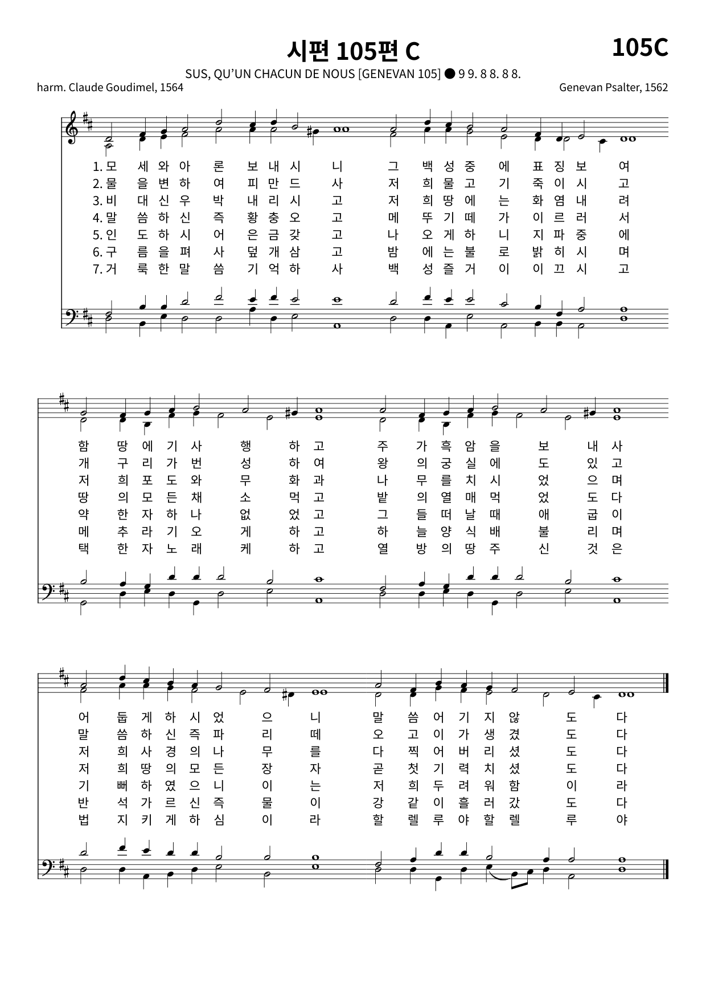

시편 105편 C
SUS, QU’UN CHACUN DE NOUS [GENEVAN 105] · 9 9. 8 8. 8 8.
곡조: Genevan Psalter, 1562 · 화성: Claude Goudimel, 1564 · 가사: 개역한글판 시편 105편 편역(AI 초벌 편역판 · 신학 감수 전) · 7절
시편 105편은 3곡으로 나누어 실었습니다: A B C · 이 곡은 시편 105편 가사의 12~18번째 절입니다.
악보 PDF MusicXML(출력용) MusicXML(반주용, 전주·반복 포함) 개역한글 시편 105편 읽기
악보
← 시편 105편 B 목록반주 재생(준비 중)시편 106편 A →
가사
1절
모세와 아론 보내시니
그 백성 중에 표징 보여
함 땅에 기사 행하고
주가 흑암을 보내사
어둡게 하시었으니
말씀 어기지 않도다
모세와 아론 보내시니
그 백성 중에 표징 보여
함 땅에 기사 행하고
주가 흑암을 보내사
어둡게 하시었으니
말씀 어기지 않도다
2절
물을 변하여 피 만드사
저희 물고기 죽이시고
개구리가 번성하여
왕의 궁실에도 있고
말씀하신즉 파리 떼
오고 이가 생겼도다
물을 변하여 피 만드사
저희 물고기 죽이시고
개구리가 번성하여
왕의 궁실에도 있고
말씀하신즉 파리 떼
오고 이가 생겼도다
3절
비 대신 우박 내리시고
저희 땅에는 화염 내려
저희 포도와 무화과
나무를 치시었으며
저희 사경의 나무를
다 찍어 버리셨도다
비 대신 우박 내리시고
저희 땅에는 화염 내려
저희 포도와 무화과
나무를 치시었으며
저희 사경의 나무를
다 찍어 버리셨도다
4절
말씀하신즉 황충 오고
메뚜기 떼가 이르러서
땅의 모든 채소 먹고
밭의 열매 먹었도다
저희 땅의 모든 장자
곧 첫 기력 치셨도다
말씀하신즉 황충 오고
메뚜기 떼가 이르러서
땅의 모든 채소 먹고
밭의 열매 먹었도다
저희 땅의 모든 장자
곧 첫 기력 치셨도다
5절
인도하시어 은금 갖고
나오게 하니 지파 중에
약한 자 하나 없었고
그들 떠날 때 애굽이
기뻐하였으니 이는
저희 두려워함이라
인도하시어 은금 갖고
나오게 하니 지파 중에
약한 자 하나 없었고
그들 떠날 때 애굽이
기뻐하였으니 이는
저희 두려워함이라
6절
구름을 펴사 덮개 삼고
밤에는 불로 밝히시며
메추라기 오게 하고
하늘 양식 배불리며
반석 가르신즉 물이
강 같이 흘러갔도다
구름을 펴사 덮개 삼고
밤에는 불로 밝히시며
메추라기 오게 하고
하늘 양식 배불리며
반석 가르신즉 물이
강 같이 흘러갔도다
7절
거룩한 말씀 기억하사
백성 즐거이 이끄시고
택한 자 노래케 하고
열방의 땅 주신 것은
법 지키게 하심이라
할렐루야 할렐루야
거룩한 말씀 기억하사
백성 즐거이 이끄시고
택한 자 노래케 하고
열방의 땅 주신 것은
법 지키게 하심이라
할렐루야 할렐루야